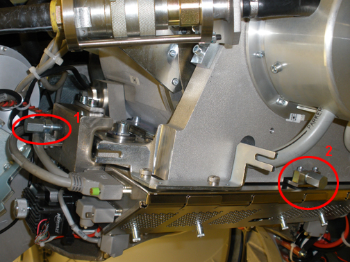

EXAMPLE: "-0.06(mm) –0.00230(inches) DOWN"
NOTE:
1 mil is equal to 0.001 inches.
NOTE:
Turn the adjustment screw clockwise for "Down." Turn the adjustment screw counter-clockwise for "Up."
Illustration 2:
Adjustment Screws
